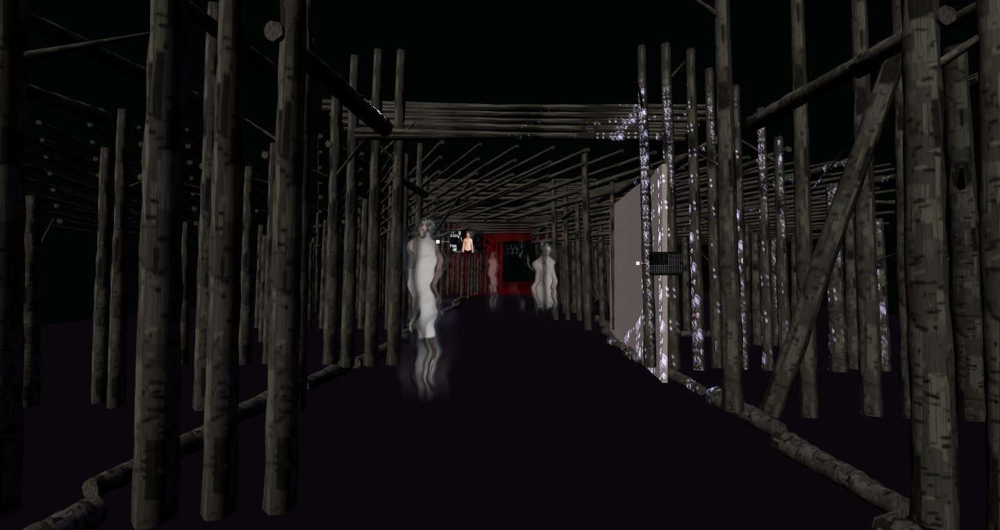

2018 · LocoOne · Видео дизайн для модного показа

Post Human / Apocalypse 2018 · LocoOne Видеодизайн для модного показа. Действие проекта происходит после антропогенной катастрофы. Глобальная цивилизация распалась. Началась эпоха новых тёмных веков. Города, технологии и культурные символы сохранились фрагментами. Они становятся материалом для новых мифов, ритуалов и способов выживания. Идея и видеодизайн — Julia Chernysheva. 3D-анимация — Alexey Gladkov.